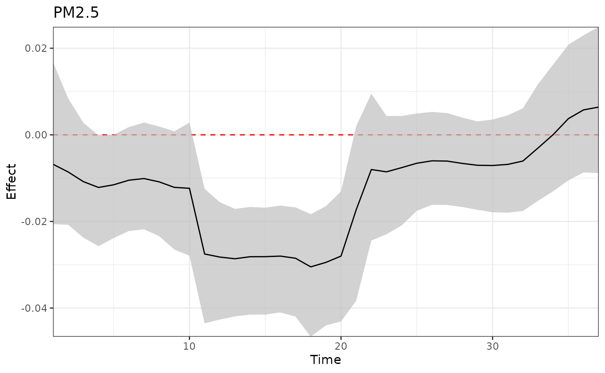

This vignette demonstrates the implementation of treed distributed lag mixture model (TDLMM). More details can be found in Mork and Wilson (2023) <doi: 10.1111/biom.13568>.
library(dlmtree)
#> This is dlmtree 1.0.0. For details visit https://danielmork.github.io/dlmtree/.
set.seed(1)Fitting the model
D <- sim.tdlmm(sim = "B", n = 5000)
fit <- dlmtree(formula = y ~ .,
data = D$dat,
exposure.data = D$exposures,
dlm.type = "linear",
mixture = TRUE,
binomial.size = 1,
mixture.interactions = "noself",
n.burn = 2500, n.iter = 10000, n.thin = 5)
#> Preparing data...
#>
#> Running TDLMM:
#> Burn-in % complete
#> [0--------25--------50--------75--------100]
#> ''''''''''''''''''''''''''''''''''''''''''
#> MCMC iterations (est time: 1.9 minutes)
#> [0--------25--------50--------75--------100]
#> ''''''''''''''''''''''''''''''''''''''''''
#> Compiling results...Model fit summary
fit_sum <- summary(fit)
#> Reconstructing main effects...
#> Reconstructing interaction effects...
#> 0%...25%...50%...75%...100%
#> Calculating marginal effects...
#> Calculating fixed effects...
fit_sum
#> ---
#> TDLMM summary
#>
#> Model run info:
#> - y ~ .
#> - family: gaussian
#> - 20 trees (alpha = 0.95, beta = 2)
#> - 2500 burn-in iterations
#> - 10000 post-burn iterations
#> - 5 thinning factor
#> - 5 exposures measured at 37 time points
#> - 10 two-way interactions (no-self interactions)
#> - 1 kappa sparsity prior
#> - 0.95 confidence level
#>
#> Fixed effects:
#> Mean Lower Upper
#> *(Intercept) 7.680 6.835 8.584
#> *c1 -1.118 -1.203 -1.030
#> *c2 -1.571 -1.665 -1.485
#> c3 -0.015 -0.104 0.073
#> c4 -0.028 -0.120 0.063
#> *c5 1.291 1.200 1.381
#> b1 0.124 -0.057 0.299
#> b2 -0.166 -0.346 0.003
#> *b3 0.892 0.718 1.067
#> *b4 1.074 0.899 1.259
#> *b5 0.551 0.370 0.730
#> ---
#> * = CI does not contain zero
#>
#> --
#> Exposure effects: critical windows
#> * = Exposure selected by Bayes Factor
#> (x.xx) = Relative effect size
#>
#> *e1 (0.62): 19-27
#> *e2 (0.51): 22-27
#> *e3 (0.36):
#> *e4 (0.21):
#> *e5 (0.8):
#> --
#> Interaction effects: critical windows
#>
#> - No critical windows
#> ---Main exposure effect
plot(fit_sum,
exposure1 = "e1",
main = "Plot title",
xlab = "Time axis label",
ylab = "Exposure effect axis label")
Lagged interaction effect
plot(fit_sum,
exposure1 = "e1", # Specify first exposure
exposure2 = "e2", # Specify second exposure
main = "Plot title")